Dashboard Client PC Installation
Parts and Materials Required
- Panther Tool Kit
- Completed Lab Automation Site Assessment Form (AW-19118)
- Completed Dashboard Server Installation
- Dashboard Client PC Image
refer to the applicable Software Install TB for correct Part Number
 Kanguru Lockable USB Drive - [CMP-01689]
Kanguru Lockable USB Drive - [CMP-01689] 
- Rufus Software v3.5 [SW-05850] - MUST use software from BOX or AGILE
Do NOT use Rufus downloaded from the Interwebs
- Logic Supply CL100 Mini PC [CMP-01662]
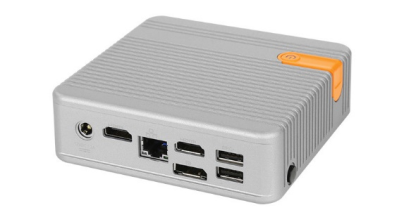
- 4K TV Installed
(A power plug near the 4K TV is also required)
- HDMI Cable
- Ethernet connection near the 4K TV
-
Time Required
Procedure
- Open the Logic Supply CL100 Mini PC box.
- Connect the power cable and plug into an outlet near the 4K TV.
- Connect the HDMI cable to the Client PC and 4K TV.
- Connect the Client PC to the customers network with an ethernet cable (CAT5e or higher).
- Plug in a Keyboard and Mouse (can be borrowed from the Panther).
- Insert the Bootable USB Drive into the Client PC.
- Power on the Client PC and press F11 as the PC is booting.
- If a BIOS Password is requested, enter: !L@8@ut0
- Select USB: Storage Device or UEFI OS in the Boot selection menu.
- The Proteous Kiosk will now load. This may take up to a minute to start.
- Select the Network Configuration Type designated in the Lab Automation Site Assessment Form.
Screenshot for reference ONLY
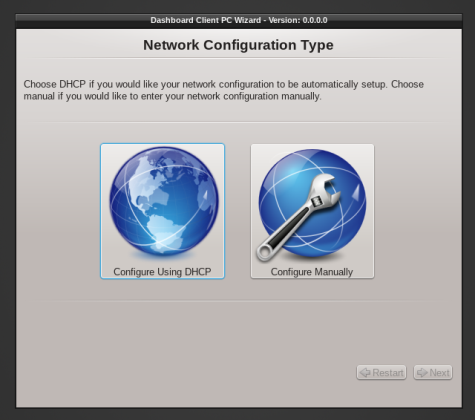
- Click OK on the Google Chrome EULA page
- Click Next on the Confirmation Page
- Follow the instructions below for each Network Configuration Type.
- Select Configure Using DHCP
- Click Next.
- Proceed to Step 16.
- Configure Manually (Static IP Address)
- Type the designated IP Address, Network Mask, Gateway, DNS Server 1, and DNS Server 2 (if necessary) from the Site Assessment Form for the Panther Link Dashboard Client PC.
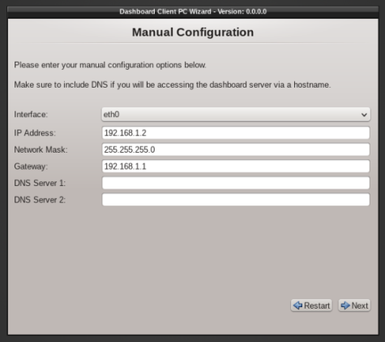
- Click Next when completed.
- Review the network configuration and click Next.
- Proceed to Step 16.
- Click on Select under Browser Settings on the Wizard screen.
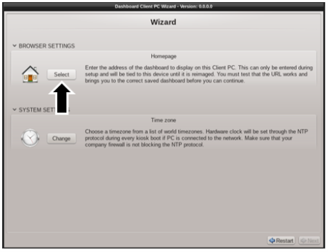
- Enter the Dashboard group home page.
 | Note—This is the ONLY webpage that the Dashboard PC will display. Typing in the NAT'ed IP Address of the Dashboard Server will only allow you to access the Dashboard homepage and not the desired Dashboard. You MUST enter the address of the Dashboard View for the TV to display the correct information. Use the FSE laptop determine the full address of the view. |
- Click Test homepage to ensure that the web address was entered correctly.
The Dashboard will now display.
- Close Chrome.
- Click OK if the web address is correct.
- Click Change time zone under System Settings on the Wizard screen.
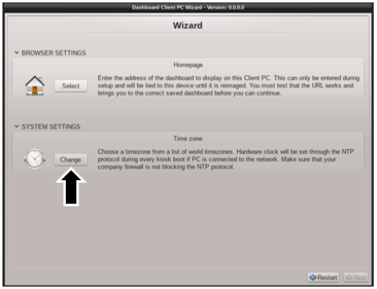
- Click Next
- Select the desired Time Zone for where the customer is located.
If “pool.ntp.org” is unavailable or the customer has an alternate NTP server, enter it here.
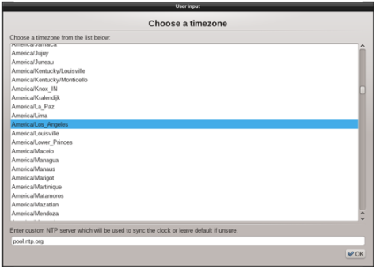
- Click OK.
- Review the Setting report and click Next to proceed.
|
|
Note—To Save or Load a configuration see instructions in Part D and Part E. |
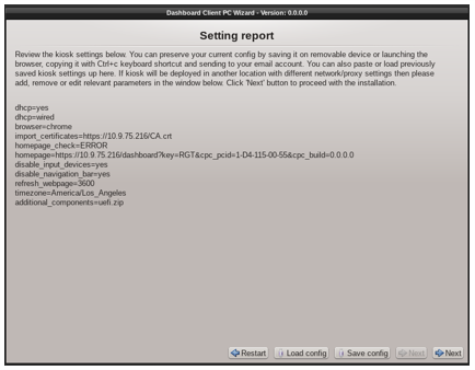
- The Kiosk ID page will display a unique hardware identifier specific to the kiosk software.
Add this information to the Lab Automation Site Assessment Form if necessary.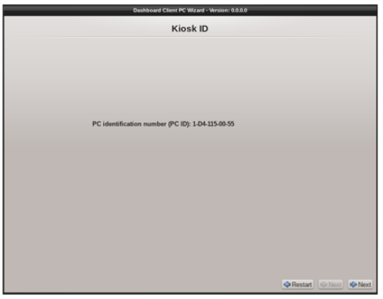
- Click Next.
- Select the Quick Formatting radio button on the System Installation screen.
- Select the hard drive of the Client PC.

|
Caution—Do NOT select the bootable USB flash drive. |
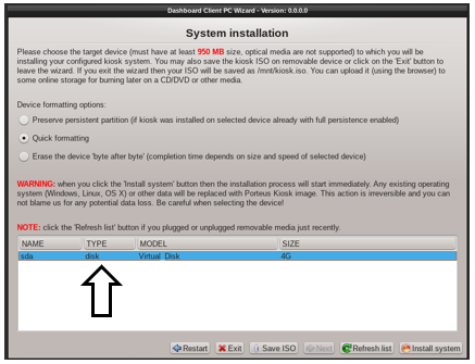
- Click Install System. The Image Burn process will begin. Keep a note of the time.
- The Kiosk banner might display the following when complete.
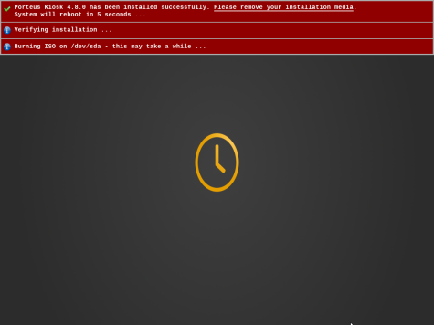
- Remove the USB drive, keyboard and mouse.
- Restart the Client PC.
| Note—The USB hubs will be disabled after the OS has booted but not while the BIOS is still starting. |
- Restart the Dashboard Client PC.
- Allow PC to boot and navigate to the desired webpage.
- Confirm the correct webpage and data is displayed
- Insert a second USB drive to an open port on the Client PC.
- From the Setting report page of the Porteous Kiosk click Save Config.
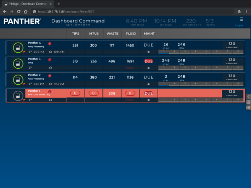
- Insert a USB storage device with the previously stored configuration.
- From the Setting report page of the Porteous Kiosk, click Load Config.
Click the  button at the top of the page to send feedback, comments, or change requests.
button at the top of the page to send feedback, comments, or change requests.